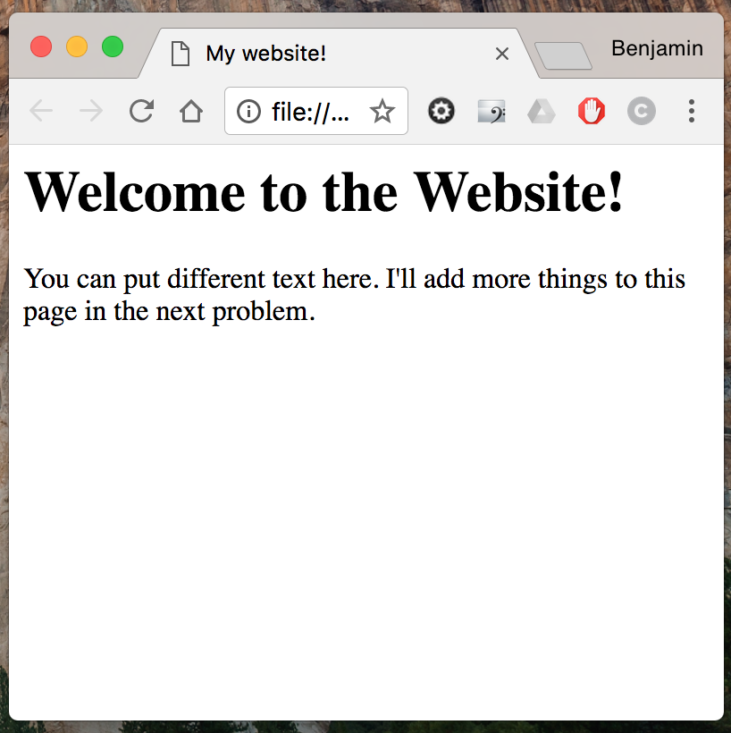
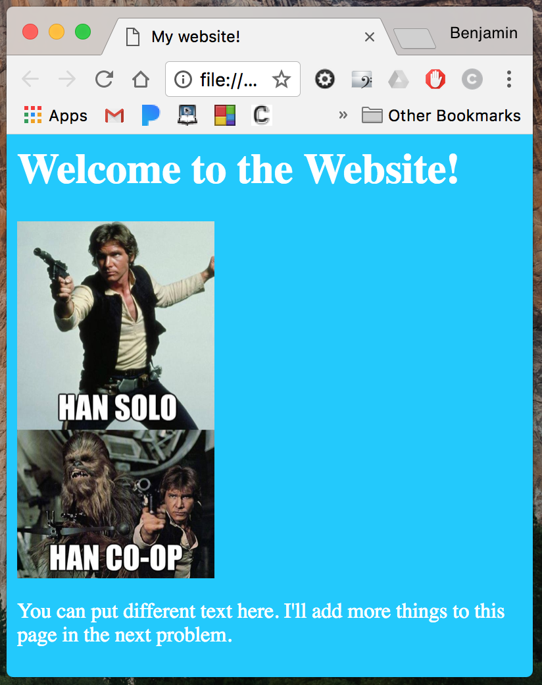
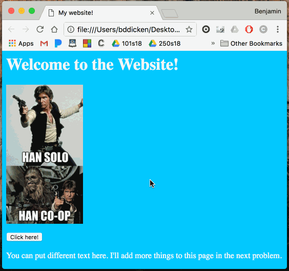
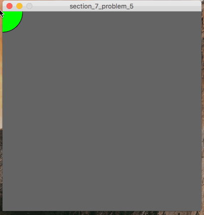

CSC 101 - Section 7
In this section, you’ll be writing some HTML and doing some basic event-handling.
Begin section by creating a directory on the desktop of you computer named site.
Once created, open up TextEdit (Mac) or Notepad (Windows) and create a new file.
NOTE: If you are on a mac, you MUST change the settings as specified near the beginning of the HTML slides.
Do that before writing any HTML!
Save the new (blank) file you just created as index.html in the site directory.
You will make changed to this index.html file in some of the problems for this section.
Problem 1
|

|
Modify the index.html file so that the website looks like the one pictured.
If you are using the ab computers, you should be able to open up the page in your browser by double-clicking on the file in Finder.
|
Problem 2
|

|
Make additional modifications to the html page so that it includes an image, and had a different background color and text color.
The image to the left is an example - your's does not need to match exactly.
|
Problem 3
|

|
Modify the website you have a button that can be clicked on!
When you click on the button, and alert should appear over the page with a message.
See the gif to the left for an example of the behavior.
In order to do this, you'll need to use some things we did not cover in class.
You should use:
- The button html tag, and the onclick attribute
- Within the onclick attribute value, you shoul use the
alert() javascript function
You can use google to help you figure out how to use these.
OR, ask your section leader for guidance!
|
Problem 4
|
|
Add an iframe to your website at the bottom of the page.
You should use a reference to a wikipedia page.
|
Problem 5
|

|
Write a processing program named problem5.pde.
This program should follow your mouse around the canvas with a shape.
When the mouse is not being held-down, it should follow with a green circle.
When it is being held down, it should follow iwth a red square, centered on the mouse.
|
You must turn in at least 3 problems to the D2L dropbox the day of section!